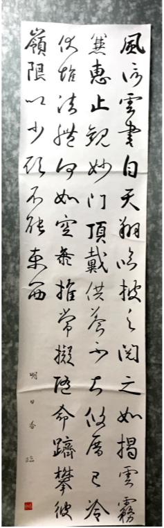
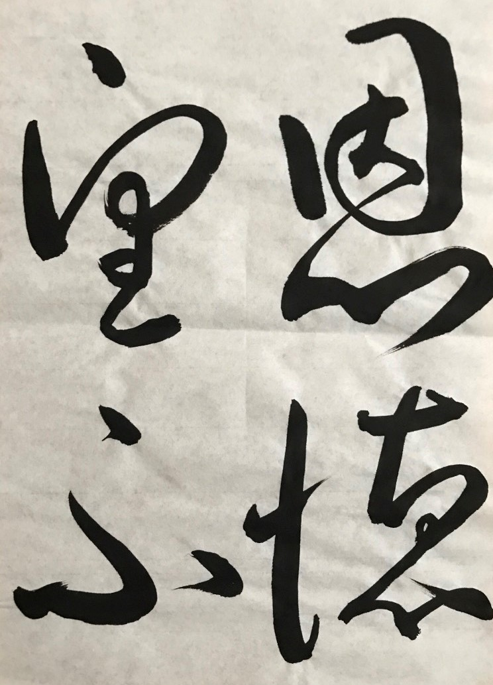
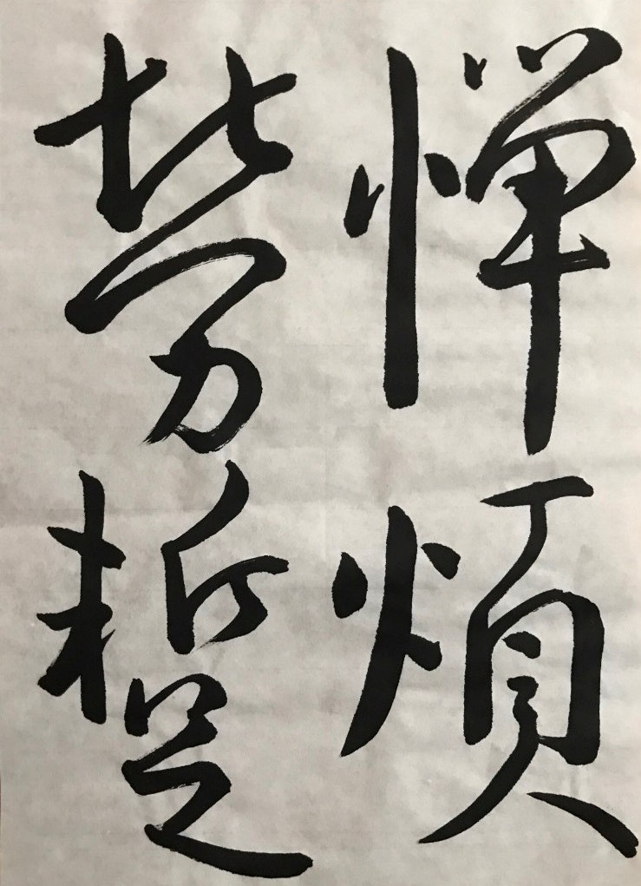
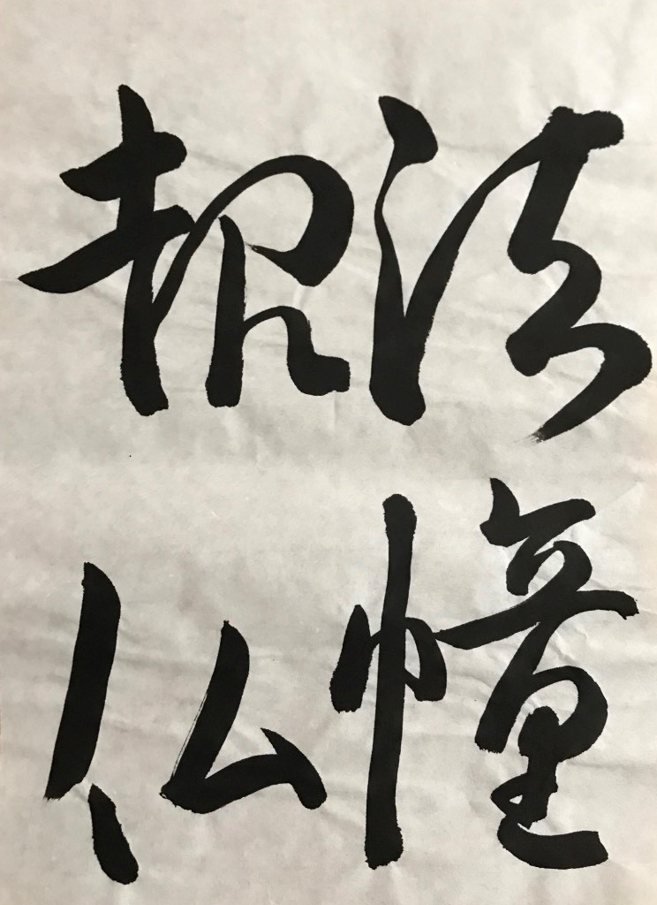

臨書とは

古典をお手本とし、それを見ながら似せて書くこと。
書道や書写の基本となる練習方法であり、臨書をすることによって点画の書き方や作者の書きぶりに触れ、手本の書風を自分のものとして取り込むことを目的とする。
臨書には手本を忠実に書き写す形臨と、手本から作者の感情や意思を汲み取りながら行う意臨と、手本を暗記した後に手本を見ないで記憶を頼りに書く背臨の三種類がある。基本的に形臨を軸として、学習状況によって適宜意臨や背臨を行う。
手本を見ながら行う臨書に対して、手本を使わず自分の意のままに筆を動かすことを自運という。
引用コンテンツ
引用元：書道入門


